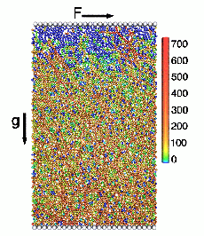
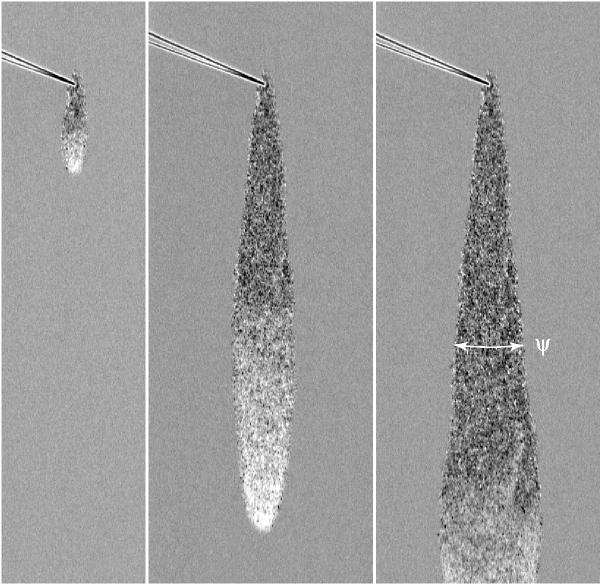
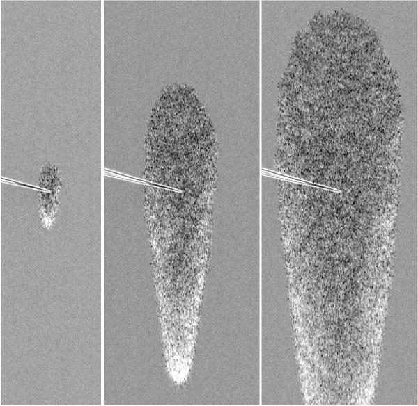
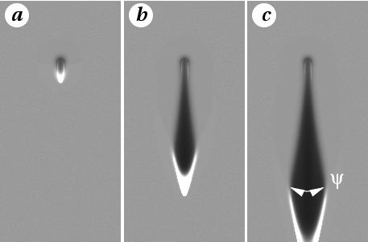
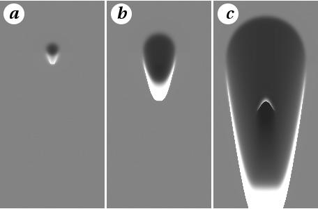

Granular materials are of extensive use in civil engineering, mining, chemical, pharmaceutics or food industries. This is why granular shear flows became an important paradigm for scientists interested in active industrial solids conveying as well as for those who study shear flows from a theoretical point of view. In the last few years there have been many experimental and numerical studies that explored a broad range of granular flow conditions from rapid dilute flows to slow dense flows, as well as the details of the shear-driven fluidization transition.
While dilute granular flows can be well described by the kinetic theory of dissipative granular gases, dense granular flows still present significant difficulty in formulation of a continuous theory. Our approach to this problem is based on the order parameter description of the granular matter. The value of the order parameter specifies the ratio between static and fluid parts of the stress tensor. The order parameter was assumed to obey dissipative dynamics governed by a bistable free energy functional. The model yielded a good qualitative description of many phenomena occurring in granular flows, such as hysteretic transition to chute flow, stick-slip regime of a driven near-surface flow, structure of avalanches in shallow chute flows, etc. However, the question of the definition of the order parameter remained along with the quantitative specification of the order parameter dynamics and the constitutive relation(s).

Within the scope of the question posed above we carried out a detailed comparison of 2D soft particle molecular dynamics simulations with the continuum theory. We defined the order parameter as a fraction of static contacts among all contacts between particles. We also proposed and verified numerically a constitutive relation based on the separation of the shear stress tensor into a``fluid part'' proportional to the strain rate tensor and a remaining ``static part''. The ratio of these two components is determined by the order parameter. Based on the simulations in a thin sheared granular layer we constructed ``free energy'' function. Then we used the information obtained to predict stress and velocity distributions in a different system, a thick granular layer under non-zero gravity driven by a moving heavy upper plate (see Figure 1). Strikingly, we found that the rheology of the fluid component agrees very well ``quantitatively'' with the kinetic theory of granular fluids [Jenkins, 1985] even in the dense regime.
Continuum theory allowed us to describe many interesting phenomena associated with shear driven fluidization, such as avalanches or stick-slip dynamics of near-surface flow driven by a heavy plate. Figure below compares two types of avalanches observed by Stephave Douady and Adrian Daerr with our continuum theory.




Many issues still remain open. The spatially non-uniform dynamics of the order parameter, the rate ( and physics ) of diffusion of the order parameter require a separate study. Another issue to be addressed is the problem of boundary conditions for the continuum theory. Finally, our simulations were limited by 2D systems, and of course the resulting continuum model can only be directly applicable to 2D systems. While we anticipate that the structure of the model should remain unchanged in 3D systems, the specific form of the fitting functions should change. This future work will allow us to perform an ultimate comparison of the 3D model not only with numerical simulations, but also with experimental data.